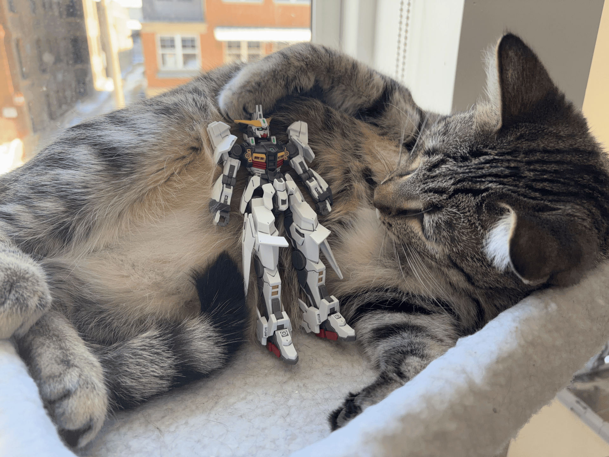
Bertuch wiggling the Zirius.
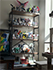
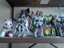
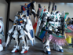
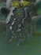
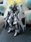
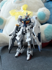
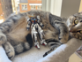
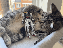
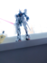
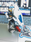
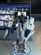
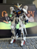
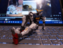
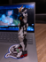
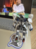
I built the HG Gundam Zirius, which is a P-Bandai kit. Idk. The fog has returned and after I finished the Zirius it became difficult to build again. But I spent even more time posing it, this time around, which was the joy. The very great joy. This one's kind of attractive. Not to the level of the Hi-𝜈, but, like. Idk. Hard to put it into words.
The build was fine. Parts of it use that shitty cheap-feeling white plastic the RG Crossbone uses and parts of it use slightly better white plastic that, like, is nearer to the premium-feeling stuff MGSDs use. Dunno why they would mix it on a set. Dunno why they still use the slightly off-white soft blend they put on that crossbone. I hate it.
I started building the MGSD Aerial after the Zirius and stopped because the spirit had left me. But that uses the same blue plastic as the HG G-Self + Atmospheric Pack, exact same color and feel. Biiiiig thumbs down